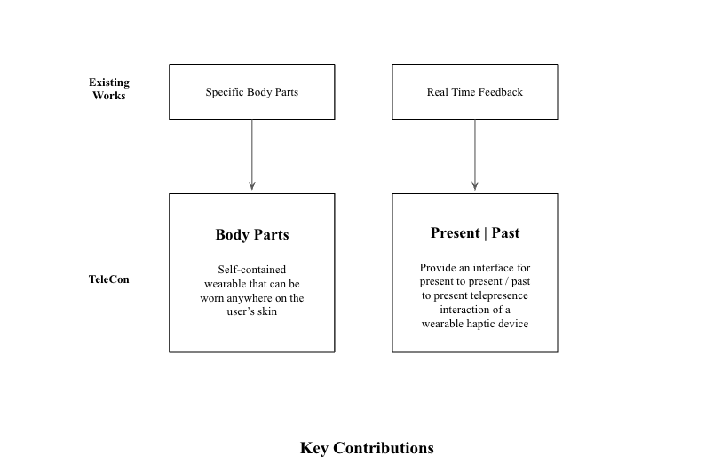
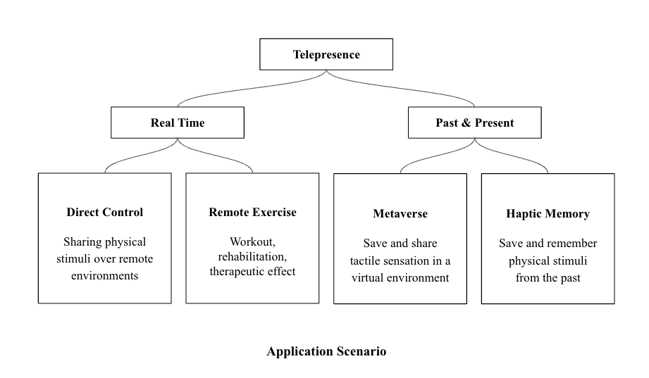
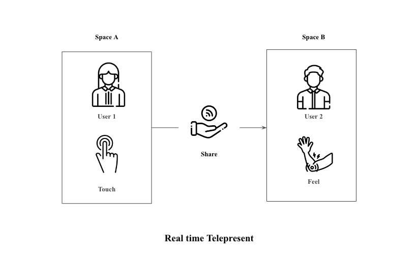
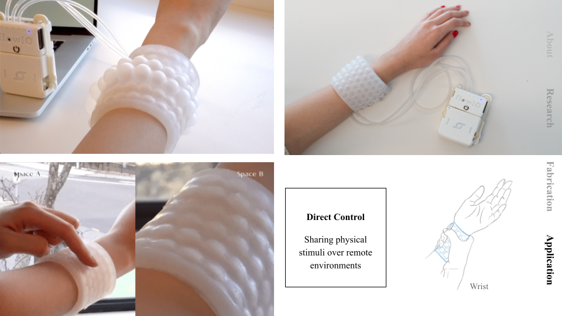
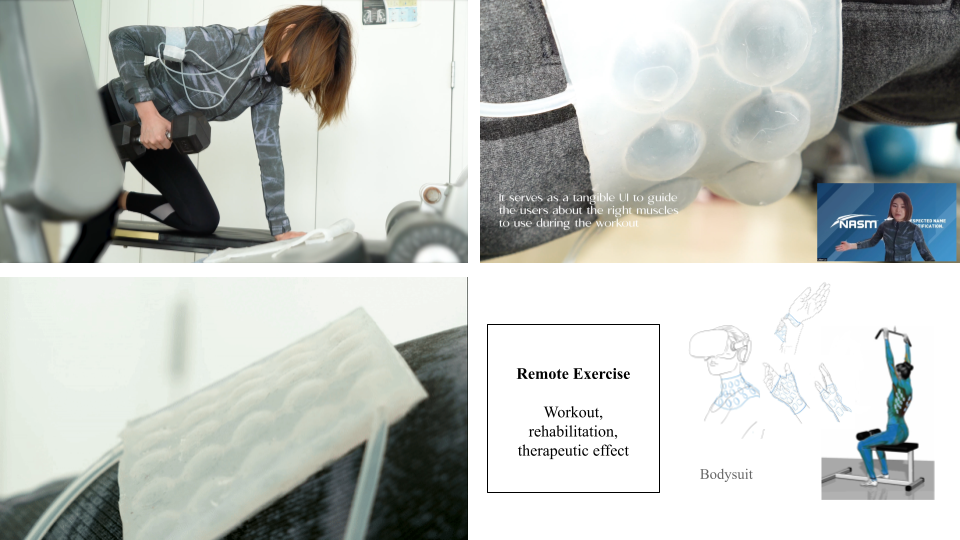
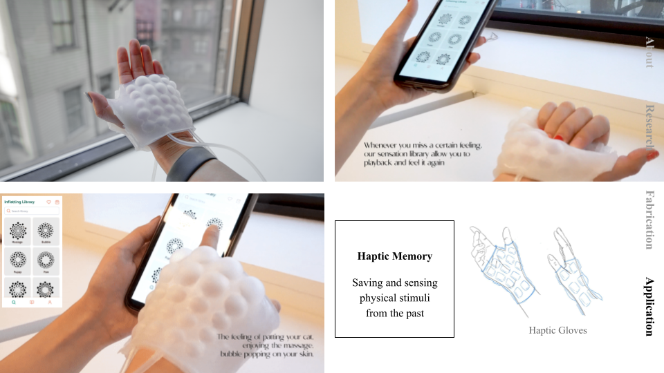
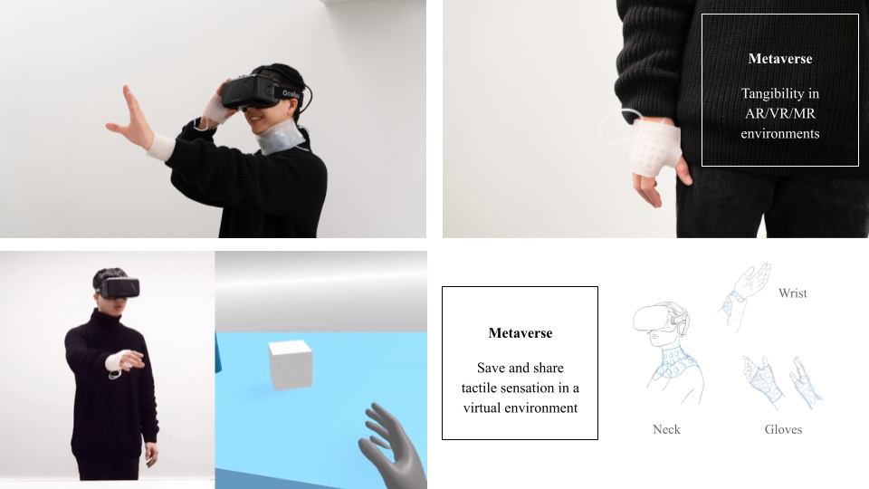
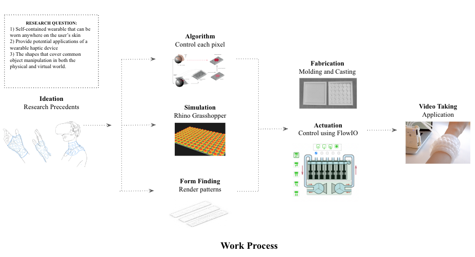
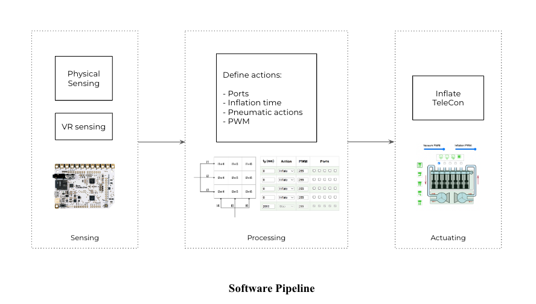

This is a team project I collaborated on with artists from the Harvard Graduate School of Design and MIT Media Lab. Our concept, TeleCon (Tele + Silicon), is a pneumatically actuated flexible haptic wearable device. It comprises a soft silicone patch engineered as a self-contained soft-robotic wearable that can be worn anywhere on the user’s skin.
TeleCon provides tactile stimuli by leveraging kinesthetic cues from force-feedback silicon actuators that push against the user’s body. The innovative wearable design allows for dynamic tactile sensations and force feedback to be directly applied to the wearer’s skin.
By combining cutting-edge soft robotics, haptics, and wearable technology, our interdisciplinary team created TeleCon as a novel haptic interface. This compact, unobtrusive device can enable new forms of telecommunication, remote physical guidance, and embodied human-computer interaction.
The project brings together expertise spanning product design, mechanical engineering, human-computer interaction, and materials science. It exemplifies how collaborations across diverse domains can spark creative innovations at the intersection of multiple disciplines.
We realized that haptics, or say the sensation of touch, has been used in many applications. For entertainment and education.
The use of haptic devices to produce targeted stimuli have been developed rapidly.
We want to use it to advocate the paradigms of tele-presence and tele-communication,

Based on existing papers, wearable haptic devices have mainly focused on 1) domain-specific design like gloves or rings on a finger that simulate sensations and 2) a Real time haptic feedback.
Our goals of this project are creating a self-contained wearable device that can be where anywhere on the user’s body and provide application scenarios and an interface for both real time and Past and present telepresence interaction.

We divided Telepresence application scenarios into two categories. First, is a real time feedback between two different users in a remote setting. We imagined this could be used for sharing emotional tactile sensations between people in a long distance relationship or a remote exercise and workout during Covid time.
The second category is interaction between the past and present. We explored an interface that saves patterns and forces of inflation on our device and shares the tactile sensation with other people. Using the application we developed, users can retrieve the tactile memory and remember and feel past sensations that no longer exist, such as your pet’s paws, heartbeats, and more.
Visual and auditory information can be easily saved on currently used daily devices and shared on social media. However, tactile sensations are still difficult to save and share within currently available interfaces.


TeleCon allow us to touch specific body part, give a hug remotely, feel the telepresent heart rates to understand emotions.

TeleCon serves as on-body training assistance. Ideally, it will be a whole-body suit that allows your coach to give accurate on-body guidance for your body training remotely.
For example your coach want to correct your training movement, the exact area will inflate to inform you of which muscle you should use for certain training.

As we know that visual and auditory data can be easily saved in current daily used devices, tactile sensation is still difficult to be saved and shared with current interface. We envision that haptic sensation can be saved within the form of patterns and forces of inflation on our device, so that we can store and memorize the intimate haptic memory forever.

The sensation of feeling the shape of an object when grasping it in Virtual Reality (VR) enhances a sense of presence and the ease of object manipulation. When a user’s hand encounters an object in a mixed reality world, pneumatic patches on hands and wrist inflate in an appropriate shape, ready for grasping. Then the patches deflate when the object is no longer in play.

We started from ideation, finding ways to control each pixel. Then we created simulation using rhino and grasshoppers, modelled different shapes and pattern of prototypes with 3d print molds, silicone casting. Finally we implemented the controlling the using flowIO and Arduino.

For the software part. We have designed two types of input sources for different application scenarios.
One is designed for the present to present scenarios world. Another input source is from the virtual world. Extracting essential variables from VR devices.
We rely on the software development to synchronize the two pads. We compute the inputs into several variables here, including ports, inflation time, pneumatic actions(Inflation, Vacuum, Release, and Stop), and PWM values of the signal.